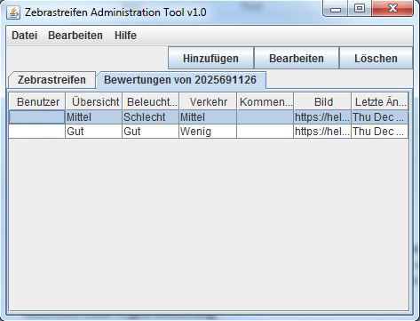

|
||
| Bedienung: | Hinzufügen: | Einen neuen Zebrastreifen hinzufügen |
| Bearbeiten: | Den OSM Node ID bearbeiten | |
| Löschen: | Entfernen eines Zebrastreifen inklusive Bewertungen | |
| Suchen: | Nach einer bestimmten OMS Node ID suchen | |
| Sortieren: | 1. klick auf eine Spaltenüberschrift soriert aufsteigend | |
| 2. klick auf eine Spaltenüberschrift soriert absteigend | ||
| Bewertung anzeigen: | Doppelklick auf den Eintrag machen | |
| Den Zebrastreifen auswählen und das Tab wechseln |  | |
| Den Zebrastreifen auswählen und das Tab wechseln | ||
| Bedienung: | Hinzufügen: | Eine neue Bewertung hinzufügen |
| Bearbeiten: | Die Bewertung bearbeiten | |
| Löschen: | Entfernen einer Bewertungen | |
| Sortieren: | 1. klick auf eine Spaltenüberschrift soriert aufsteigend | |
| 2. klick auf eine Spaltenüberschrift soriert absteigend | ||
| Erstellen einer Bewertung/neuer Zebrastreifen: | Osm Node ID | Den OSM Node eintragen - kann man auf osm.org suchen |
| Übersicht | Wie übersichtlich sind die strassen verhältnisse | |
| Beleuchtung | Wie gut beleuchtet ist die Strasse | |
| Verkehr | Wie befahren ist die Strasse | |
| Kommentar | Sonstige Bemerkung zur Sicherheit des Zebrastreifen | |
| Mapillary Schlüssel | Schlüssel von einem mapillary bild - https://d1cuyjsrcm0gby.cloudfront.net/'Das is der Schlüssel'/thumb-320.jpg |
Under Construction